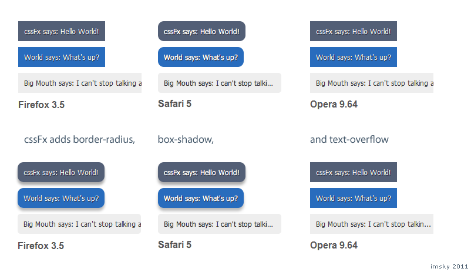

cssFx is a very easy-to-use JavaScript polyfill that adds forward-compatibility for CSS3 property syntax to browser versions that used vendor-specific syntax. What that means is you can stop adding -moz-border-radius and -webkit-box-shadow to your CSS and just write border-radius and box-shadow, keeping your stylesheets clean and your download size low.
Here's a demonstration:

License
BSD
Authors
imsky
Contact
Ivan M (ivan@imsky.org)
Download
You can download this project in either
zip or
tar formats.
You can also clone the project with Git
by running:
$ git clone git://github.com/imsky/cssFx